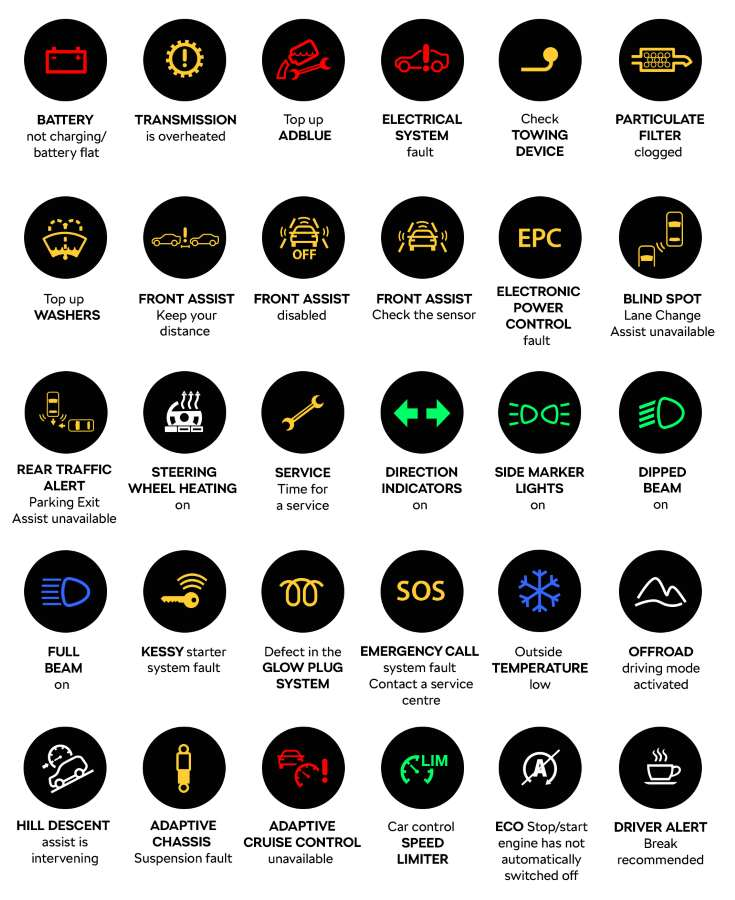

Vehicle Maintenance Log
Track service milestone intervals and log routine mechanical updates.
Record New Service
Log your vehicle's mechanical updates to maintain clear health history dashboards.
Logged Service Records
Your stored operational maintenance updates appear dynamically below:
No logged services found. Use the form to submit your first service update.
Routine Maintenance Milestones
Proactive service checklists mapped by vehicle running distances to prevent core engine wear.
3,000 - 5,000 KM
Fluid & Filter Basics
- Engine oil replacement & fresh spin-on oil filter.
- Top up windshield washer reservoir & brake fluid levels.
- Inspect engine air filter element for dust buildup.
10,000 - 15,000 KM
Tuning & Traction
- Cross-rotation of tires to ensure even tread wear logs.
- Full brake pad thickness check & rotor surface scan.
- Replace engine intake air filter & cabin climate filter.
30,000 - 50,000 KM
Drive Systems Overhaul
- Install fresh high-conductivity spark plug sets.
- Flush and replace automatic/manual transmission fluids.
- Inspect auxiliary drive belts, tensioners, and water pump lines.
Know Your Dashboard Warnings
Critical system warning lights that require immediate preventative inspection to avoid mechanical failure.
